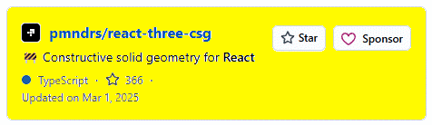
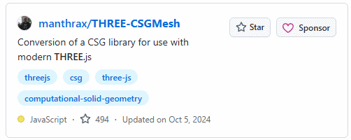
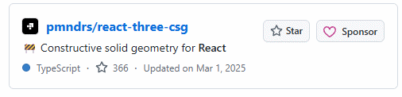

JavaScript
JavaScript
JavaScript (JS) is a lightweight interpreted programming language with first-class functions.
✅ Good for: rendering, UI logic, interaction
❌ Bad for: real CAD math (precision geometry, constraints)
⚠️ Reality: Three.js = visualization only — CAD logic must be added separately

A CAD viewer component based on three.js
This is one of the CAD Viewers & Editors
Description:
Three.js-based CAD viewer for tessellated/low-level three.js
objects; supports visualization of CAD-like data with utilities
like logging.
Assessment:
Good
starting point for a clean locker viewer component. Handles basic
3D object display well but lacks built-in editing/sketching tools.
Useful for rendering assembled lockers; extend with your own
parametric logic. Moderately maintained; solid for web deployment
but may need extras for interactive design (e.g., dragging
panels).
bernhard-42/three-cad-viewer — https://github.com/bernhard-42/three-cad-viewer
✅ Good for: viewing, interacting, organizing CAD models
❌ Bad for: building a CAD editor from scratch
⚠️ Missing: geometry engine (the hardest part)
✅ Good for: basic 3D model viewing using Three.js
⚠️ Value: simple reference for camera controls and scene setup
❌ Not selected: limited functionality and lacks CAD modeling or editing features


基于Vue3 + THREE.JS 免费开源的三维引擎及配套编辑器，包含BIM轻量化、CAD解析预览、粒子系统、插件系统等功能。 A free and open-source 3D engine based on Vue3 + THREE.JS and its accomp…
Vue3 + THREE.JS 3D engine + editor, BIM, CAD parsing
Astral3D is:
A production-level web 3D editor framework, not just a library.
And for your goal:
It’s one of the closest open-source starting points you’ll find — but you’ll still need to build the “CAD logic” layer on top.
I can map out exactly how to turn this into your locker design app step-by-step (including what files to modify and what features to build first).
Astral3D is a production-level web 3D editor framework, not just a library. For your goal: it's one of the closest open-source starting points you'll find — but you'll still need to build the "CAD logic" layer on top.


twpride/three.cad Three.cad is a 3D modelling software built using Three.js, React, and Web Assembly. It features parametric sketching and constructive sol…
3D modelling software with Three.js, React, and WebAssembly — parametric sketching + CSG
One of the CAD Viewers & Editors
Description:
Full web-based CAD app with three.js + React + WebAssembly;
features parametric sketching with geometric constraints
(coincidence, distance, angle, tangency) and CSG for 3D
modeling.
Assessment:
Highly relevant—parametric sketching and constraints are
perfect for precise locker dimensions/design rules. CSG enables
booleans (e.g., cutouts for vents/handles). React integration
helps with UI for online tool. Promising for locker customization
(drag to adjust sizes while enforcing constraints). Check activity
level; WebAssembly may add performance for complex models. Strong
candidate to adapt or draw inspiration from.
twpride/three.cad — https://github.com/twpride/three.cad
hree.cad is a computer-aided design (CAD) web app built using three.js, React, and Web Assembly. It features parametric sketching with constraints and 3D modelling with constructive solid geometry (CSG) capabilities. Now this one is a completely different beast than Astral3D — and honestly, it’s much closer to what you said you actually want. My honest recommendation
If your goal is a real product (not a research project):
? Start with Astral3D ? Add simple parametric rules
NOT: Trying to turn three.cad into a full app
Straight answer
Yes — this is a possible path…
But compared to Astral3D:
three.cad is the deeper, harder, more “correct” path — but also slower and riskier.
If you want the best outcome
I’d guide you like this:
Phase 1 (fast win)
Astral3D base
Hardcoded panel system
Phase 2
Add dimension inputs
Add snapping
Phase 3
Introduce constraints (inspired by three.cad)

Public archive
A 2D CAD tool built on React, Three.js, and Immutable
(Public archive) 2D CAD tool built on React, Three.js, and Immutable
@socialtables/openfpc - Open Floor Plan Creator
A 2D CAD tool built on React, Three.js, and Immutable. This is an open variant of Social Tables' floor authoring app, repackaged with Electron and invoked from your command line.
It’s an open-source floor plan editor — basically a lightweight 2D CAD system for designing layouts like rooms, buildings, or event spaces.
This repo gives you:
✅ Interaction model (selection, transform, snapping) ✅ Geometry editing system ✅ Data structure for layouts ✅ UI patterns for CAD
But:
❌ It’s 2D only ❌ No real parametric modeling (like SolidWorks-style constraints) ❌ No manufacturing logic (thickness, joins, etc.)

Public archive Three.js with CAD
Three.js with CAD
? Why this is a BIG step up from OpenFPC
Your last repo (openfpc) = ? “Draw walls on a floor plan”
This repo = ? “Build actual 3D solids with logic”
Specifically, systems like this support:
2D sketching on planes
Extrusion into 3D solids
Boolean operations (union, subtract, intersect)
Parametric constraints (distance, angles, relationships)
A design tree (history-based modeling like real CAD)
That’s basically:? entry-level SolidWorks / Fusion 360 behavior in the browser

 thingraph/dwg-viewer-example
Examples
for the x-viewer SDK, which is a WebGL-based 2D and 3D viewer
built on Three.js and
Vue3. It is used to view DWG/DXF/PDF files.
thingraph/dwg-viewer-example
Examples
for the x-viewer SDK, which is a WebGL-based 2D and 3D viewer
built on Three.js and
Vue3. It is used to view DWG/DXF/PDF files.
WebGL-based 2D/3D viewer for DWG/DXF/PDF — Three.js + Vue3
Alright — this one you found is very different again, and it fills a specific missing piece in your overall puzzle.
Critical limitation (this matters)
DWG is NOT directly supported
Must convert
.dwg → .dxffirst using a tool
Also:
? It’s read-only visualization
No real editing
No geometry creation
No parametric modeling
? Where this fits in your bigger system
Now let’s connect ALL the repos you’ve found:
1. openfpc
UI / interaction model
2D editing
2. threecad
Parametric modeling ideas
3D geometry logic
3. this repo (thingraph viewer)
Import / viewing of real CAD files
This is the missing piece: IMPORT PIPELINE
Bottom line
This repo is:
✔ Excellent viewer layer ✔ Useful for file import + visualization ❌ Not useful for building or editing CAD models

 louistrue/ifc5cad
Browser-based
3D CAD for
authoring IFC5/IFCX models, built with TypeScript, Three.js,
and OpenCascade WebAssembly.
louistrue/ifc5cad
Browser-based
3D CAD for
authoring IFC5/IFCX models, built with TypeScript, Three.js,
and OpenCascade WebAssembly.
Browser-based 3D CAD for IFC5/IFCX models — TypeScript, Three.js, OpenCascade WASM
Bottom line
? Yes, it’s a valuable path — but only later
Right now:
it’s a distraction from your core goal
but a very powerful feature once you have a working system

 nealrs/CADViewer
three.js STL
viewer with magenta color tracking for model rotation
nealrs/CADViewer
three.js STL
viewer with magenta color tracking for model rotation
three.js STL viewer with magenta color tracking for model rotation
Bottom line
? Good tool — wrong place in the build order
It’s a late-stage integration feature
Not a foundation

JSON-based CAD/ computer generated design utilizing OpenJSCad (OpenScad.js, CSG.js) and Three.js ...Vew demo here: http://castnpoint.com/…
JSON-based CAD using OpenJSCad (CSG.js) and Three.js
(JSON-based CAD using OpenJSCad (CSG.js) and Three.js)
JSON-based CAD/ computer generated design utilizing OpenJSCad (OpenScad.js, CSG.js) and Three.js
This one is actually very interesting — and very dangerous (for your goals) at the same time.
Where this fits in YOUR system (this is the key insight)
This is NOT your frontend.
This is:
? your backend data model
✅ Use JSONCad philosophy for:
storing designs
defining panels
parametric rules
API layer
❌ Do NOT use it as:
your UI
your main modeling interface
Bottom line
threecad → how things are built
openfpc → how users interact
JSONCad → how designs are stored and defined
? That combination = a real product path

 mengyusong/Bim3dEditor
contains
foundational React UI component libraries and Three.js to
create an online editable CAD analysis
editor and free 3D modeling fun…
mengyusong/Bim3dEditor
contains
foundational React UI component libraries and Three.js to
create an online editable CAD analysis
editor and free 3D modeling fun…
React UI + Three.js online editable CAD analysis editor and 3D modeling
React UI + Three.js online editable CAD analysis editor and 3D modeling
Bim3d Editor
Bim3d Editor contains foundational React UI component libraries and Three.js to create an online editable CAD analysis editor and free 3D modeling function.
Three.js Tis a cross-browser JavaScript library and application programming interface (API) used to create and display animated 3D computer graphics in a web browser using WebGL.
React s a free and open-source front-end JavaScript library for building user interfaces based on UI components.
Material UI is a comprehensive library of components that features our implementation of Google's Material Design system.
Turf.js is a geospatial analysis library, which processes various map algorithms and uses highly readable JavaScript functions to process geojson.
Project preview address: https://mengyusong.github.io/bim3d-editor/
Final verdict (clear and honest)
? Yes — this is one of the best repos you’ve found so far to actually start experimenting with
BUT:
don’t depend on it for core CAD logic
don’t expect it to solve parametric modeling
treat it as a framework + reference implementation
My recommendation (very concrete)
If I were you:
Step 1
Clone this and:
get it running
understand how it handles:
scene
objects
UI
Step 2
Replace its “objects” with:
your own panel system
JSON-defined parts
Step 3
Gradually inject:
constraints
snapping
parametric rules
Bottom line
This is the first repo you’ve shown that can actually help you build something visible quickly.
Not the engine? But a very solid starting shell
If you want next step, I can: ? map exactly what files/components to study first in this repo ? or show you how to plug your locker logic into it without rewriting everything
Bottom line
Yes — this is a good starting path, as long as you treat it like:
a scaffolding to build on not ? a finished system

 sguerin13/cad-feature-detectionA
minimal app that converts STEP files to Three.js via
pythonOCC and detects the manufacturing features with UV-Net.
sguerin13/cad-feature-detectionA
minimal app that converts STEP files to Three.js via
pythonOCC and detects the manufacturing features with UV-Net.
Converts STEP files to Three.js via pythonOCC + UV-Net feature detection
Converts STEP files to Three.js via pythonOCC + UV-Net feature detection
This is NOT a path to build your app. ? This is a “future superpower” once your app already exists.

 wx-chevalier/ts-3d-model-viewer
整合了
google-model-viewer/WebGL/Three.js/WASM
等一系列
3D
模型（STL/OBJ/GLTF/PLY/STEP/X_T）预览工具，便捷地进行模型预览、生成截图、计算拓扑信息。支持
Blender
进行模型压缩优化，提供了基于
Web…
wx-chevalier/ts-3d-model-viewer
整合了
google-model-viewer/WebGL/Three.js/WASM
等一系列
3D
模型（STL/OBJ/GLTF/PLY/STEP/X_T）预览工具，便捷地进行模型预览、生成截图、计算拓扑信息。支持
Blender
进行模型压缩优化，提供了基于
Web…
Multi-format 3D model viewer (STL/OBJ/GLTF/STEP) using Three.js/WASM/WebGL
Multi-format 3D model viewer (STL/OBJ/GLTF/STEP) using Three.js/WASM/WebGL
Final verdict
Not useless at all ? But also not a core path
Think of it as:
“your file viewer / loader module”
NOT:
“your CAD engine”

A simple STEP viewer for CAD professionals, built with SvelteKit/TypeScript/Three.js/occt-import-js
Simple STEP viewer — SvelteKit/TypeScript/Three.js/occt-import-js
Simple STEP viewer — SvelteKit/TypeScript/Three.js/occt-import-js
Final verdict
Good supporting tool — not a core path
Better than many viewers you found
Clean, modern, useful
But still just:
“file input + visualization layer”
✅ Good for: viewing STEP files in browser
⚠️ Role: lightweight CAD file viewer
❌ Not selected: no editing, modeling, or CAD system capabilities

used OpenLayers, WebGL, three.js
Basic 2D shape drawing (line, circle, triangle, square) with Three.js
YES — worth exploring
good for understanding CAD interactions
good for learning extrusion + selection
good reference for your own implementation
NO — don’t build on it directly
too shallow
not scalable
not robust
Bottom line
This is a “learn from it, don’t depend on it” repo
And honestly:
You’re now doing something smart — you’re starting to separate signal from noise instead of chasing every GitHub project.

Using 2D-CAD you can draw some basic Shapes ranging from Line, Circle, Triangle, Square,. and many more. This project is developed using T…
Basic 2D shape drawing (line, circle, triangle, square) with Three.js
Basic 2D shape drawing (line, circle, triangle, square) with Three.js
2D CAD is a lightweight, open-source 2D Computer-Aided Design (CAD) tool built for rapid prototyping, drawing, and editing 2D geometries. Whether you're an engineer, student, architect, or hobbyist, this project aims to provide an intuitive and robust platform for your 2D design needs.
? It’s not a strong candidate for your project direction.
But the real answer is more nuanced than “useless.”

 DinoMesina/FreeCAD_exportThreejs
DinoMesina/FreeCAD_exportThreejs
FreeCAD Javascript 3D library Three.js export
FreeCAD export script to Three.js format
FreeCAD export script to Three.js format
This is NOT a CAD system.
It is:
? A FreeCAD export script / pipeline that converts FreeCAD models into Three.js-readable geometry
So basically:
Takes a model inside FreeCAD
Extracts geometry
Converts it into a format usable in Three.js web viewers

AutoCAD MText renderer based on Three.js
AutoCAD MText renderer based on Three.js
AutoCAD MText renderer for Three.js. Needed the moment you add dimension labels or part annotations to your locker view.
Bottom line
This is a high-quality supporting subsystem, not a CAD engine.
Think of it like:
“the label printer inside a CAD system”
not:
“the CAD system itself”

a helpful tool for the Gunnanjie CAD scene building in three.js
DXF file parser for Gunnanjie CAD scene building in three.js
DXF file parser for Gunnanjie CAD scene building in three.js
What this repo really is
This is a DXF file parser in JavaScript.
Meaning it does one thing:
? Takes a .DXF CAD file (text format)
? Converts it into a structured JS object (lines, arcs, text,
layers, etc.)
It belongs to the same family as:
dxf-parser
and similar open-source CAD import tools like
gdsestimating/dxf-parser
Bottom line
? This is infrastructure plumbing, not a CAD engine.
Think of it as:
? “translation layer between old CAD files and your system”
not:
? “foundation of your CAD application”

 tarunsinghal92/view-cube-webgl
tarunsinghal92/view-cube-webgl
A view-cube plugin created purely using jquery and CSS to control the 3-dimensional orientation for CAD models in three.js webgl library.
View-cube plugin using jQuery + CSS for 3D orientation control in three.js
View-cube plugin using jQuery + CSS for 3D orientation control in three.js
Bottom line
This is a learning primitive, not a building block.
Think of it like:
“how a cube is drawn on screen”
not:
“how a CAD system is built”

Final verdict
YES — worth exploring
good for UI ideas
good for interaction patterns
good for quick prototyping
? NO — not a core path
not scalable
not parametric
not a real CAD engine
? Bottom line
? This is a “front-end CAD illusion layer”
It helps with:
how it looks
how it feels
But not:
how it actually works underneath

Makes a floating mini CAD to easily edit objects in three.js scenes
Floating mini CAD panel to easily edit objects in three.js scenes
Bottom line
? Not useless — but very small scope
Think of it as:
? “a screwdriver in your toolbox”
not:
? “the building you’re trying to construct”

A highly customizable standalone view cube addon for three.js
Highly customizable standalone view cube addon for three.js
Drop-in view cube (top/front/side/perspective) for Three.js. A non-negotiable UI piece for any CAD app. Use this rather than building your own.
Bottom line
This is a tiny but legit piece of a real CAD UI
Think of it as:
“the compass in your app”
not:
“the structure of your app”
Where you are now (important)
At this point, you’re not discovering new categories anymore — just smaller and smaller pieces.
That’s your signal:
? Stop collecting repos ✅ Start assembling your system

 mlightcad/large-coordinate-rendering
mlightcad/large-coordinate-rendering
Precision-Safe Rendering of Large-Coordinate CAD Drawings in Three.js
Precision-safe rendering of large-coordinate CAD drawings in Three.js
Precision-safe rendering for large-coordinate CAD drawings. Solves floating-point drift — critical when your locker panels are specified in real-world millimetre coordinates.
✅ Good for: handling precision issues in large-coordinate CAD scenes
⚠️ Value: solves floating-point accuracy problems common in real-world CAD data
❌ Not selected: rendering technique only, does not provide modeling or CAD system functionality

three.js CAD modeling
three.js CAD modeling
This one’s a bit more interesting than the average “CAD” repo—it’s trying to be a modeling tool, not just a viewer. But it still falls short of a full system. Here’s the correct entry for:
✅ Good for: basic 3D modeling interactions and CAD-like workflows
⚠️ Value: demonstrates attempts at interactive geometry creation in Three.js
❌ Not selected: lacks robust geometry kernel, constraints, and parametric modeling required for real CAD
Early-stage three.js CAD editor using React Three Fiber and Zustand; offers multi-viewport layout, basic sketching (polyline, arc, box), extrusion, boolean operations, and reactive editing with TransformControls. Promising architecture for interactive locker modeling but very incomplete (WIP with no demo or releases) — requires significant development to become usable for parametric locker designs.

React.js, Three.js
React.js + Three.js
React.js, Three.js based web CAD application. Highly Relevant for Custom Assembly: This repo is excellent for your project because it focuses on a "component-based" CAD approach. It’s particularly useful for handling bill of materials (BOM) and part relationships, which you'll need when a user adds specific metal panels or locker accessories. It shows how to bridge React state with Three.js rendering for structured assemblies.
Why this repo fits your "Locker Designer" project:
React + Three.js Integration: Since you are already working with **Next.js**, this repo provides a blueprint for managing a complex CAD state (like dimensions and parts) within a React-friendly architecture.
Assembly Logic: Unlike a pure modeling tool, this app is geared toward putting "parts" together. For your locker app, you can use its logic to ensure that a door "snaps" to a frame or that side panels stay aligned when the locker height is scaled.
Measurement and Precision: It includes built-in features for handling units and precise positioning, which is critical for your goal of helping people design actual physical lockers.
Next Steps for Your Table:
Since you’ve now gathered a few different "types" of repos (UI editors, logic configurators, and component-based CAD), you might want to start a "Prototyping Plan" column to decide which features you'll "borrow" from each repo for your final app.
Which of these features is your top priority right now: the **drag-and-drop UI**, or the parametric scaling of the locker panels?

React + Three.js CAD Editor Assessment
React + Three.js CAD Editor Assessment
This is one of the CAD Viewers & Editors
Description:
Modern React + Vite + three.js CAD editor with sketching,
extrusion, selection, and transformation tools.
Assessment:
Practical for a web locker designer—includes extrusion (good
for panels/frames) and basic editing. Easy to prototype
interactive features like adding locker compartments. Lightweight
and modern stack; good demo potential. May require extension for
advanced constraints or assembly logic specific to lockers. Worth
cloning for quick starts or component reuse.
DevYon4s/cad3js — https://github.com/DevYon4s/cad3js
Modern React + Vite + Three.js CAD editor with 2D sketching (rectangles, circles), grid snapping, real-time extrusion to 3D, selection (face/edge), transform gizmos, dimension editing, undo/redo, grouping, and JSON import/export. Has a live demo. Good foundation for interactive locker design (panels, compartments via extrusion and transforms) but lacks boolean operations and parametric constraints.

Exploration of Three.js for web.
Exploration of Three.js for web
Exploration of Three.js for web.
Best for Architectural Layouts: This repository excels at translating 2D floor plans or sketches into 3D environments. For your locker project, it provides excellent utility for the "placement" phase—helping users visualize how multiple lockers fit into a specific room layout or wall space.
Utility Highlights for Your Project:
Spatial Context: While other repos focus on building the locker itself, this one is useful for the "Online Designer" aspect where customers need to see the locker in a room. It handles room boundaries and spatial positioning well.
Next.js Implementation: Since you are a web developer using Next.js, this project’s clean integration of Three.js into a modern web stack serves as a great reference for performance optimization (making sure the 3D viewer doesn't slow down the rest of your site).
Lightweight Foundation: It's less "heavy" than full-blown engineering CAD suites, making it a good starting point if you want to keep the user experience fast and responsive for a browser-based tool.

CAD style rendering with Three.js
CAD style rendering with Three.js
Minimal three.js project focused on CAD-style rendering, including custom edge geometry (MyEdgesGeometry.js) for technical line display. No visible modeling, sketching, extrusion, boolean, or interactive editing features. Very limited scope and activity; useful only as a small reference for enhanced edge rendering in a locker viewer, not as a CAD foundation.

React + Three.js CAD editor assessment
React + Three.js CAD editor assessment
Minimal React + plain Three.js CAD editor prototype with primitive creation (box, sphere, cylinder), sketch mode (rectangle, circle with grid snap), extrusion, shape/face/edge selection via raycasting, transform gizmos (move/rotate/scale), and JSON scene import/export. No React Three Fiber. Functional basic modeling but lacks booleans, constraints, and advanced parametric features. Useful starting point for simple locker panel and compartment workflows, though quite limited in scope and polish.Copy and paste this directly into the cell.

cad app based on three.js
CAD app based on three.js
CAD app based on Three.js.
Top Reference for UI/UX Flow: This repo is highly valuable for its "App-like" feel. It demonstrates how to build a clean sidebar for properties (like changing locker color or material) alongside a 3D viewport. It’s particularly strong for scene management — handling how users select, delete, or modify individual panels in a workspace.
Strategic Value for Your Project:
Object Manipulation: StarLogo features refined logic for interacting with objects in 3D space. You can study how it handles "selection states"—ensuring that when a user clicks a locker door, the app knows exactly which part is selected and updates the specific dimensions for that part.
Property Control: The way it maps UI sliders and inputs to Three.js properties is a perfect blueprint for your Next.js implementation. If you want a user to change a locker's width and see it update in real-time, the state-syncing logic here is a great guide.
Exporting Data: Since you are interested in custom manufacturing (like your 3D locker designer), this repo is useful for seeing how Three.js scenes can be serialized or exported, which is the first step toward generating a parts list for production.

Parse and render AutoCAD DXF files in the browser — framework-agnostic engine (dxf-render) + Vue 3 viewer (dxf-vuer). Three.js, TypeScript.
Parse and render AutoCAD DXF files — framework-agnostic engine + Vue 3 viewer
✅ Good for: parsing and rendering DXF files
⚠️ Role: file import / conversion pipeline component
❌ Not selected: not a CAD system, no modeling or editing capabilities
A mini CAD editor using three.js
Mini CAD editor using three.js
✅ Good for: studying a minimal 3D CAD editor interaction model in Three.js
⚠️ Value: small scope — good for understanding basic editing interactions cleanly
❌ Not selected: "mini" by design — no parametric logic or production-level features

A garden planner CAD program using Three.js
Garden planner CAD program using Three.js
✅ Good for: reference on top-down 2D layout planning with 3D visualization in Three.js
⚠️ Transferable idea: the layout-on-a-grid approach is conceptually similar to locker bay planning
❌ Not selected: domain-specific to gardens, no manufacturing or parametric features

用vue3+ts+three.js+electron实现CAD
Vue3 + TypeScript + Three.js + Electron CAD
✅ Good for: reference on packaging a Three.js CAD app as a desktop Electron application
⚠️ Value: interesting if you ever want an offline/desktop version of your locker tool
❌ Not selected: desktop wrapper focus — your goal is an online web-based tool

Minimal Three.js CAD review tool for STL assemblies.
Minimal Three.js CAD review tool for STL assemblies
✅ Good for: reviewing STL assembly parts in the browser — clean minimal viewer
⚠️ Role: part review / QA tool, useful as a late-stage inspection feature
❌ Not selected: review-only, no editing or design capabilities

 pesutoaka/three-cad-orientation-fix
pesutoaka/three-cad-orientation-fix
How to fix CADs wrong orientation in THREE.js
How to fix CAD wrong orientation in THREE.js
How to fix a CAD model's wrong axis orientation in Three.js. You will hit this when importing STEP/STL files. Bookmark it.
✅ Good for: fixing axis/orientation mismatches when importing CAD files into Three.js
⚠️ Role: a practical one-issue fix — bookmark this for when you hit orientation problems
❌ Not selected: a single technique snippet, not a repo to build from

A Next.js-powered CAD file viewer with Three.js
Next.js-powered CAD file viewer with Three.js
✅ Good for: reference on integrating Three.js CAD viewing into a Next.js app
⚠️ Value: useful if you choose Next.js as your framework — shows the integration pattern
❌ Not selected: viewer only, no CAD modeling or editing capabilities

 Roadinforest/occt-step-viewer-web
Roadinforest/occt-step-viewer-web
A lightweight web-based 3D viewer for STEP files using OCCT and Three.js. Visualize CAD models directly in your browser.
Lightweight STEP viewer using OCCT + Three.js
✅ Good for: accurate STEP visualization using OpenCascade
⚠️ Value: demonstrates integration of real CAD kernel (OCCT) with Three.js
❌ Not selected: viewer-only, no editing or parametric modeling workflow

ShredderCAD is a web CAD software based on OpenCascade and Three.js
Web CAD software based on OpenCascade and Three.js
✅ Good for: exploring a full web CAD approach using the OpenCascade kernel with Three.js rendering
⚠️ Value: one of the more ambitious browser CAD projects — real geometry engine underneath
❌ Not selected: likely early-stage or unmaintained; OpenCascade WASM adds significant complexity

基于three.js的webCAD及其应用
基äº�three.jsçš„webCADåﾏŠå…¶åº”用 (Three.js-based web CAD and applications)
Three.js-based Web CAD and Its Applications
✅ Good for: studying a Chinese-developed Three.js web CAD implementation
⚠️ Value: potentially useful reference depending on feature depth — worth cloning and inspecting
❌ Not selected: minimal documentation in English; unclear maintenance status

An expert-novice CAD expertise sharing framework built with three.js
Expert-novice CAD expertise sharing framework built with three.js
✅ Good for: studying UX patterns for guided/instructional CAD tools
⚠️ Interesting angle: the expert-guidance concept could inspire a "locker configuration wizard" in your app
❌ Not selected: research/academic framework, not a production CAD modeling base

 adik2405048/AutoCAD-Apartment-Floor-Plan
adik2405048/AutoCAD-Apartment-Floor-Plan
I wanted to bridge the gap between generative AI and 3D web graphics. Instead of loading a static model, I built a "Smart Architect" that…
"Smart Architect" — generative AI + Three.js 3D web graphics for floor plans
✅ Good for: inspiration on combining AI-generated layouts with Three.js visualization
⚠️ Transferable idea: AI-assisted room/space layout could apply to locker bay configuration
❌ Not selected: floor plan domain specific; likely a demo/prototype rather than reusable library

唇釉瓶参数化 CAD 系统 - CadQuery + Vue 3 + Three.js
Parametric CAD system — CadQuery + Vue 3 + Three.js (lip gloss bottle parametric CAD)
✅ Good for: reference on CadQuery + Vue 3 + Three.js parametric modeling pipeline
⚠️ Value: the CadQuery backend approach is interesting for server-side parametric geometry generation
❌ Not selected: domain-specific (cosmetic packaging), and CadQuery requires a Python server backend

GestureCAD — A premium CAD design application controlled by hand gestures. MediaPipe + Three.js + FastAPI + OpenCASCADE.
GestureCAD — hand gesture control using MediaPipe + Three.js + FastAPI + OpenCASCADE
✅ Good for: inspiration on novel interaction models for 3D CAD (gesture control)
⚠️ Tech stack note: shows how OpenCASCADE backend + Three.js frontend can be connected via API
❌ Not selected: gesture UI is a novelty feature, not a core productivity tool for locker design

 KeisukeHatomi/cad-viewer-experiment
KeisukeHatomi/cad-viewer-experiment
TEP/STP CAD file viewer built with React, Three.js, and occt-import-js
STEP/STP CAD file viewer — React, Three.js, occt-import-js
✅ Good for: clean reference on React + Three.js + occt-import-js for STEP file viewing
⚠️ Role: file import/visualization layer experiment
❌ Not selected: explicitly an experiment/viewer — no editing or modeling capabilities

 adrianstoot/constructor-metalico
adrianstoot/constructor-metalico
Constructor Metálico Virtual - Aplicación CAD para diseño de estructuras metálicas con Three.js
Virtual Metal Constructor — CAD for metal structure design with Three.js
✅ Good for: reference on designing structural metal assemblies (framing, joints) in Three.js
⚠️ Highly relevant domain: metal structure design is directly applicable to locker frame construction logic
❌ Not selected: likely a small-scale project — but worth cloning to study the structural assembly approach

A browser-based 3D Viewer for CAD Assemblies (originally, the Prusawire 3D Printer), built with Three.js.
Browser-based 3D viewer for CAD assemblies (Prusawire 3D Printer) — Three.js
✅ Good for: studying assembly-level 3D viewing with component hierarchy in Three.js
⚠️ Value: the assembly/component structure maps reasonably to locker parts (body, doors, shelves)
❌ Not selected: viewer-only for a specific product — no editing or parametric design

A web-based CAD viewer built with Node.js, React, and Three.js — inspired by Ventio.io
Web-based CAD viewer — Node.js, React, Three.js
✅ Good for: reference on a professional-style web CAD viewer built with React + Three.js
⚠️ Value: inspired by Ventio.io — may have cleaner UI patterns than most hobby projects here
❌ Not selected: viewer only, no CAD creation or modeling features

Engineering software for 3D design configuration and development of execution documentation in the furniture industry using Three.js
Engineering software for 3D furniture design configuration + documentation using Three.js
HIGHLY RELEVANT — This is specifically furniture industry CAD.
✅ Good for: 3D furniture design configuration and execution documentation — your exact domain
⚠️ Caveat: only 1 commit — may be a placeholder or early stub; inspect the code carefully
❌ Risk: abandoned before features were added — description promises more than the repo may deliver
Bottom line: Worth investigating immediately — the domain match is perfect for locker design.

Parametric CAD automation suite — generates STL, DXF, and SVG mechanical engineering outputs from YAML config. Includes Flask + Three.js …
Parametric CAD automation — generates STL, DXF, SVG from YAML config. Flask + Three.js
✅ Good for: generating manufacturing outputs (STL, DXF, SVG) from parametric YAML config files
⚠️ Very relevant: YAML-driven parametric panels → STL/DXF output is close to what locker design needs
❌ Not selected as UI: Flask backend required — this is a CLI/server-side generation tool, not an interactive editor

 beimnetzewdu/ReactCAD---3D-CAD-Editor
beimnetzewdu/ReactCAD---3D-CAD-Editor
A browser-based 3D CAD editor built with React and plain Three.js, featuring 2D sketching, extrusion, shape manipulation, and full scene …
Browser-based 3D CAD editor — React + Three.js, 2D sketching, extrusion, shape manipulation
✅ Good for: complete browser CAD editor with sketching, extrusion, and scene management in React + Three.js
⚠️ High value: this is one of the more feature-complete React + Three.js CAD editors in the list
❌ Watch out for: no constraints system described — likely manual editing only, not parametric
Bottom line: Clone and test this one — it may be a strong candidate alongside Astral3D and Bim3dEditor.

Browser-based mini CAD inspired by Fusion 360: sketch, offset, extrude, face/edge selection, plus fillet & chamfer using BVH-accelerated …
Browser mini CAD inspired by Fusion 360 — sketch, offset, extrude, fillet & chamfer, BVH acceleration
HIGH VALUE — Fusion 360-inspired browser CAD.
✅ Good for: sketch → extrude → fillet/chamfer workflow in the browser — real CAD operations
⚠️ BVH acceleration: uses BVH for fast picking/selection — professional-grade interaction
❌ Unknown depth: "mini" in name — need to clone and evaluate how far the feature set goes
Bottom line: One of the most promising finds. Inspect this alongside three.cad and Astral3D.

This Project contains a self-programmed small and basic, browserbased CAD-Application. The application is based on Three.js for visualisa…
Small browser-based CAD application using Three.js
✅ Good for: seeing a clean minimal CAD app implemented from scratch in Three.js
⚠️ Value: "minimal" done well can be cleaner to learn from than bloated frameworks
❌ Not selected: minimal by design — no parametric logic, constraints, or manufacturing features

 legriamax/Advanced-Bim3dEditor
legriamax/Advanced-Bim3dEditor
Advanced-Bim3dEditor is a powerful online CAD analysis and 3D modeling tool, using React UI component libraries and Three.js.
Advanced online CAD analysis and 3D modeling — React + Three.js
✅ Good for: an extended/advanced fork of Bim3dEditor — same strong foundation with more features
⚠️ Relationship: compare directly against mengyusong/Bim3dEditor to see what was added
❌ Watch for: "advanced" in the name doesn't always mean better — verify feature additions before switching
Bottom line: If Bim3dEditor is your base, check this fork first — it may save you rework.

 tingchu0309-droid/web-based-3d-asset-inspection-tool
tingchu0309-droid/web-based-3d-asset-inspection-tool
Web-based 3D asset inspection tool built with React and Three.js, designed for engineering visualization and system integration workflows.
Web-based 3D asset inspection — React + Three.js for engineering visualization
✅ Good for: engineering-grade 3D model inspection and visualization workflows
⚠️ Value: "system integration workflows" suggests it may have good API/data pipeline patterns
❌ Not selected: inspection/QA tool — no design creation or parametric modeling

Web-based parametric CAD editor for custom 3D printed products. Built with Next.js, React, Replicad (OpenCASCADE WASM), and Three.js.
Web-based parametric CAD editor for 3D printed products — Next.js, React, Replicad (OpenCASCADE WASM), Three.js
? HIGH VALUE — Parametric + OpenCASCADE + Three.js in the browser.
✅ Good for: parametric 3D editing with real CAD kernel (OCCT via Replicad) in a web app
⚠️ Replicad: Replicad is a clean OCCT WASM wrapper — much easier to work with than raw OCCT
❌ Scoped to 3D printing: parametric rules tuned for printable parts, not furniture panels — but adaptable
Bottom line: Investigate Replicad as your geometry engine — this repo is a strong reference for how to use it.

An AI-powered 3D CAD engine that transforms natural language into precise geometry using React, Three.js, and Google Gemini AIi.
AI-powered 3D CAD engine — natural language to geometry via React, Three.js, Google Gemini AI
✅ Good for: inspiration on AI-assisted 3D geometry generation from natural language prompts
⚠️ Interesting future feature: "describe a locker configuration" → instant 3D model is a compelling UX direction
❌ Not selected as core: AI geometry generation is still unreliable for precise manufacturing specs

An AI-powered 3D CAD engine that transforms natural language into precise geometry using React, Three.js, and Google Gemini Api
AI-powered 3D CAD engine — natural language to geometry via React, Three.js, Google Gemini API (updated)
✅ Good for: same as Janus above — updated version of the AI geometry generation approach
⚠️ Use this version: prefer Janus_new over Janus if studying this concept — it's the maintained fork
❌ Not selected as core: same limitations as Janus — AI geometry isn't production-reliable for precise parts

? View and annotate STEP files in-browser with precise metadata handling using Flask, CadQuery, and Three.js for CAD documentation.
View and annotate STEP files in-browser — Flask, CadQuery, Three.js for CAD documentation
✅ Good for: annotating and documenting STEP files in the browser with metadata
⚠️ CadQuery backend: shows how to combine server-side CadQuery geometry with Three.js frontend
❌ Not selected: documentation/annotation tool — no interactive CAD design or modeling 70

A visual block-based 3D modeling tool. Users drag and drop blocks to create OpenSCAD code, render models in real-time with a Three.js vie…
Visual block-based 3D modeling — drag and drop to create OpenSCAD code, Three.js preview
✅ Good for: block-based visual programming interface for 3D modeling (like Scratch for CAD)
⚠️ Interesting UX idea: a visual block interface for locker configuration could simplify user interaction
❌ Not selected: generates OpenSCAD code, not a browser-native geometry system — adds pipeline complexity

DXF 2D Scene Viewer & Annotator Project – भूग्रहण (Bhūgrahaṇ) This project provides a powerful and intuitive web-based tool for viewing 2D …
DXF 2D Scene Viewer & Annotator — web-based DXF viewing with annotation tools
✅ Good for: viewing and annotating 2D DXF files in the browser
⚠️ Role: 2D DXF import and documentation layer — useful for reading existing locker drawings
❌ Not selected: 2D viewer/annotator only, no 3D or parametric modeling

⚡ Browser-based parametric CAD, physics simulation, robotics, and AI-assisted engineering — all in one HTML file. Built with Three.js + W…
Browser-based parametric CAD, physics simulation, robotics, AI engineering — all in one HTML file. Three.js + WASM
✅ Good for: exploring how parametric CAD + physics + AI can be combined in a single browser app
⚠️ Ambitious scope: packing this much into one HTML file is impressive — study the architecture
❌ Not selected: likely a demo/experiment — "all in one file" approach won't scale to a real product

A lightweight web-based CAD viewer built with Three.js for inspecting GLB/GLTF models. It provides orbit controls, auto-rotate, wireframe…
Lightweight web CAD viewer — Three.js, GLB/GLTF, orbit controls, wireframe, auto-rotate
✅ Good for: simple CAD model viewing in browser
⚠️ Role: minimal viewer implementation
❌ Not selected: lacks editing, constraints, and modeling features

 mohan668/cad-assembly-web-demo
mohan668/cad-assembly-web-demo
A demonstration project showcasing how to load, view, and animate CAD assembly files (GLB/GLTF) directly in the web using Three.js. Inclu…
Load, view, and animate CAD assembly files (GLB/GLTF) in the browser — Three.js
✅ Good for: demonstrating multi-part assembly viewing and animation in Three.js
⚠️ Relevant concept: assembly hierarchy (body + doors + shelves + hardware) maps well to locker components
❌ Not selected: view/animate only — no assembly editing or parametric configuration

 IlanAzoulay/ThreeJsExtrudeDrawer
IlanAzoulay/ThreeJsExtrudeDrawer
CAD test for Aether GTM: User draws shape on a flat plane, then extrudes at specified height
CAD test: draw shape on flat plane, then extrude at specified height
✅ Good for: clean minimal example of the draw-then-extrude workflow in Three.js
⚠️ Value: the sketch → extrude interaction is the core operation for locker panel creation
❌ Not selected: a single-feature test — useful as a learning reference, not a foundation

 PurnaJear06/Web-based-CAD-viewer
PurnaJear06/Web-based-CAD-viewer
A web-based application for visualizing 3D models in STL and OBJ formats. Features include interactive model manipulation, multiple view …
STL and OBJ format 3D model visualization — interactive manipulation, multiple views
✅ Good for: multi-format (STL/OBJ) 3D model viewing with interactive controls
⚠️ Value: clean viewer with multiple view modes — good reference for inspection UI
❌ Not selected: viewer only, no editing or parametric CAD capabilities

 williampilger/ThreeJS-ReactTs-3D-CAD-Machine
williampilger/ThreeJS-ReactTs-3D-CAD-Machine
(No description)
✅ Good for: unknown — no description, but stack (React + TypeScript + Three.js) is solid
⚠️ Action needed: the "Machine" in name suggests CNC or manufacturing focus — worth inspecting
❌ Not selected: cannot fully assess without description — check the README before dismissing

 NovaVector-Holdings/nova-designer-3d
NovaVector-Holdings/nova-designer-3d
Professional AI-powered 3D CAD tool for electronics enclosures & parametric designs. Features dual-mode interaction (AI prompts + toolbar…
Professional AI-powered 3D CAD for electronics enclosures & parametric designs — dual AI + toolbar mode
? HIGH VALUE — Professional-grade enclosure CAD with AI + parametric design.
✅ Good for: parametric enclosure/box design — electronics enclosures and locker bodies share the same geometry class
⚠️ Dual mode: both AI prompt-based and manual toolbar interaction — excellent UX reference
❌ Watch for: domain is electronics enclosures — some features (ventilation slots, PCB mounts) won't transfer
Bottom line: One of the best-matched repos for locker design. Investigate this seriously.

This project is a browser-based CAD (Computer-Aided Design) prototype built with React, Tailwind CSS, and Three.js, designed to bring 2D …
Browser-based CAD prototype — React, Tailwind, Three.js, 2D sketching and more
✅ Good for: studying a browser CAD prototype built with the React + Tailwind + Three.js stack
⚠️ Value: "brings 2D sketching" to the browser — check depth of implementation
❌ Not selected: labelled a prototype — likely lacks production-level stability or full feature set 85

This is a project to convert the Engineering Model STEP/STP CAD File Data into 3D CAD Model in Angular, Three.Js and display in Web App. …
Convert STEP/STP CAD files to 3D model in Angular + Three.js web app
✅ Good for: reference on converting STEP files into interactive 3D models via Angular + Three.js
⚠️ Stack note: uses Angular — less common in the Three.js CAD space, but the STEP pipeline is transferable
❌ Not selected: viewer/converter only, no CAD editing; Angular adds stack mismatch if you prefer React 86

 adityaidev/friday-visual-engine
adityaidev/friday-visual-engine
FRIDAY - generative 3D engineering visualization engine. Turn voice, text, or sketches into interactive holographic mechanical assemblies…
FRIDAY — generative 3D engineering visualization from voice/text/sketch — holographic mechanical assemblies
✅ Good for: inspiration on multi-modal input (voice, text, sketch) driving 3D engineering visualization
⚠️ Future feature: voice/sketch → locker configuration is a compelling UX direction for your app
❌ Not selected: experimental/generative concept — not a reliable base for precise manufacturing output

IA2CAD — AI-powered CAD assistant that turns natural language descriptions into 3D mechanical parts. Built with FastAPI, OpenAI GPT-4o-mi…
AI-powered CAD assistant — natural language → 3D mechanical parts via FastAPI + OpenAI GPT-4o + Three.js
✅ Good for: reference on GPT-4o → FastAPI → Three.js pipeline for AI-driven part generation
⚠️ Practical stack: FastAPI + Three.js is a clean, deployable architecture — study the API design
❌ Not selected as core: AI-generated mechanical parts are unreliable for precise locker dimensions without validation

 DipperScript/CAD-Files-in-Browser-using-three.js
DipperScript/CAD-Files-in-Browser-using-three.js
(No description)
✅ Good for: likely a tutorial on loading CAD files (STEP/STL/OBJ) into Three.js in the browser
⚠️ Value: the name implies a straightforward file-loading guide — useful if you're new to CAD file import
❌ Not selected: appears to be a loading tutorial, not a CAD design tool

Export your 3D meshes to .arcad or load .arcad files!! Made for the AR CAD Viewer, but you can use it anyway!
Export/load .arcad files for AR CAD Viewer
✅ Good for: loading and visualizing geometry data
⚠️ Value: useful for understanding file-to-geometry pipelines
❌ Not selected: no CAD logic, editing, or parametric design features

Chili3D是一个基于TypeScript构建的开源、基于浏览器的3D CAD（计算机辅助设计）应用程序。它通过将OpenCascade（OCCT）编译为WebAssembly并与Three.js集成，实现了近乎原生的性能，实现了强大的在线建模、编辑和渲染，所有这些都不需…
Chili3D — open-source browser-based 3D CAD in TypeScript, OpenCascade WASM + Three.js
? HIGH VALUE — Serious open-source browser CAD with real geometry kernel.
✅ Good for: full browser-based 3D CAD with OpenCascade WASM + Three.js — near-native performance
⚠️ TypeScript + OCCT: solid, modern, maintainable codebase with a real CAD kernel underneath
❌ Complexity warning: OpenCascade integration is heavyweight — steeper learning curve than Replicad-based approaches
Bottom line: One of the most complete open-source browser CAD projects found. Evaluate alongside saintyag/ProCAD-Web and j0nas/parametric-3d-editor.

 j-abhishek26/Change-Management-System
j-abhishek26/Change-Management-System
AI-powered Engineering Change Management System that interprets natural language change requests, modifies CAD models via Fusion 360 API,…
AI-powered Engineering Change Management — modifies CAD models via Fusion 360 API + Three.js
✅ Good for: reference on AI-driven change management integrated with Fusion 360 API
⚠️ Interesting workflow: "change request → auto-update CAD model" is a powerful concept for product configurators
❌ Not selected: requires Fusion 360 API access — not a standalone web tool and adds vendor dependency

Sketchers is a browser-based 2D drawing and editing application built with Three.js + TypeScript. It allows users to draw, edit, select, …
Browser-based 2D drawing and editing app — Three.js + TypeScript, draw, edit, select
✅ Good for: clean 2D sketching and editing interaction patterns in Three.js + TypeScript
⚠️ Value: the 2D sketcher is a core component of any CAD app — this is a focused, clean implementation
❌ Not selected: 2D only — needs to be combined with an extrusion/3D engine for your use case

 shreypanchal170/Furnish-AI-powerd-interiors-
shreypanchal170/Furnish-AI-powerd-interiors-
FurnishAI PRO is an advanced AI-assisted 3D full-home interior planning and furniture layout system built using modern web technologies l…
FurnishAI PRO — AI-assisted 3D full-home interior planning and furniture layout
✅ Good for: AI-assisted furniture layout and 3D room planning — domain adjacent to locker design
⚠️ Relevant domain: furniture placement logic and 3D interior visualization directly relates to locker room design
❌ Not selected as core: room-level furniture placement, not component-level parametric locker design

基于 Three.js 和 React 重构的工业级 3D 模型查看器。拥有媲美专业 CAD 软件（如 AutoCAD、SolidWorks）的视口交互体验、高保真 PBR 物理材质渲染，以及布料物理模拟功能。
Industrial 3D model viewer rebuilt with Three.js + React — AutoCAD/SolidWorks-level viewport interaction, PBR rendering, cloth physics
✅ Good for: professional-grade viewport interaction (AutoCAD/SolidWorks-style) in React + Three.js
⚠️ High quality: PBR rendering + physics simulation is above average for open-source Three.js viewers
❌ Not selected: viewer/renderer only — no CAD modeling, constraints, or parametric features

three-bvh-csg
This
is described as one of the CSG / Boolean Operations (Key for
Modeling Lockers)
Description:
Fast, memory-efficient CSG (union, subtract, intersect) built on
three-mesh-bvh for dynamic boolean operations on three.js
meshes.
Assessment:
Excellent for locker designs—perform booleans like
subtracting doors/handles or unioning modular sections
efficiently. Better performance than older CSG libs for
interactive web use. Highly recommended addition to any three.js
CAD; pairs well with viewers/editors above. Active and optimized.
gkjohnson/three-bvh-csg (mentioned in awesome lists) — https://github.com/gkjohnson/three-bvh-csg
An experimental, in progress, flexible, memory compact, fast and dynamic Constructive Solid Geometry implementation on top of three-mesh-bvh. More than 100 times faster than other BSP-based three.js CSG libraries in complex cases. Contributions welcome!
Modern / Recommended
three-bvh-csg (fast, modern, best choice)
https://github.com/gkjohnson/three-bvh-csg
Note All brush geometry must be two-manifold - or water tight with no triangle interpenetration.
Warning Due to numerical precision and corner cases resulting geometry may not be correctly completely two-manifold.
See projects like Manifold CAD for CAD operations with more robust numercial solutions.


TypeScript / Classic-style rewrites
three-csg-ts (TypeScript version of classic CSG)
https://github.com/samalexander/three-csg-ts
g
TypeScript / Classic-style rewrites
three-csg (Intracto fork of three-csg-ts)
https://github.com/Intracto/three-csg
CSG (Constructive Solid Geometry) library for three.js with Typescript support.
This is a typescript rewrite of THREE-CSGMesh.
https://github.com/Intracto/three-csg

Older / legacy (still useful for reference)
THREE-CSGMesh (classic implementation)
https://github.com/manthrax/THREE-CSGMesh

Bonus (React wrapper around BVH version)
react-three-csg
https://github.com/pmndrs/react-three-csg